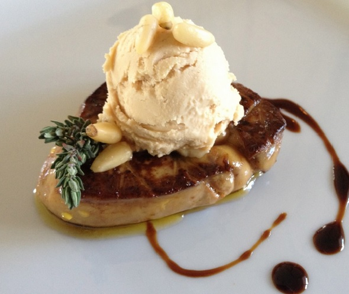

Foie Gras Ice Cream

Ingredients:
Black Pepper. fresh ground, 1g
Method:
-
Deveign the foie gras
(see how)
and cut into one 300g portion and one 150g portion.
(D'Artagnan is a good place to get foie gras)
-
Cut the 150g portion into 1/2" cubes and place in a plastic bag to be
put into a hot water bath.
-
In a water bath, warm the sealed 150g foie gras to 40℃ and
then pass through a fine mesh sieve.
-
In a very hot sautee pan, sear the 300g foie gras until very dark.
Drain any excess fat.
-
In a saucepan add the milk, brandy and pepper. Heat to 60℃
and let steep.
- In a blender, combine the milk mixture and foie gras paste.
- Slowly add the sodium alginate, then the seared foie gras.
- Pass the mixture through a fine mesh sieve.
- Run in your home ice cream maker.
-
Serve with torn pieces of the Savory Peppercorn Sponge Cake or as
desired.